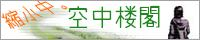

リンクについて
空中楼閣はリンクフリーです。事前・事後報告不要ですよ。
でも報告いただければ、こそこそ遊びにお邪魔させていただきます。
- サイト名：空中楼閣
- 管理人：咲華
- ＵＲＬ：http://sakka.yukigesho.com/
バナー（直リン推奨）↓

空中楼閣はリンクフリーです。事前・事後報告不要ですよ。
でも報告いただければ、こそこそ遊びにお邪魔させていただきます。
バナー（直リン推奨）↓

50音順 ⇔相互 →片思い。
⇔藍咲旅館／藍咲 万寿様／現代中心。伝わる感情が胸をつく。
⇔風樹の箱庭／架月 黄亜様／現代ＦＴ。眼前に広がるのはやわらかな。
⇔＋１５／中村 陽介様／現代中心。心を鷲掴みにされる。
→alter ego／石橋のん様／現代中心。紡がれる物語に引き込まれた。
⇔Tiny garden／森崎様／現代・恋愛。時に切なく、時に優しく。
⇔waltz／セロ様／現代。詩的な言葉が忘れられない。
50音順 ⇔相互 →片思い。
→キタユメ。／日丸屋和良様／web漫画。楽しみなのはヘタリア。
⇔十九文屋／丸様／絵＆web漫画＆小説。可愛らしく。
→天の祈りと大地の願い／五月想様／web漫画。優しくなれるから。
→12時の権力者／わさ様／web漫画。読み応えは憎らしいほどに。
⇔Brightness?／ゆきまんまん様／絵。浮かびあがるストーリー。
50音順 ⇔相互 →片思い。
→beyond／ヤクミ様／midi素材＆展示。物語をつづる音。
⇔CONSIDER／カエ様／midi素材＆展示。繊細な響きに触れて。
→Liberty Music Room／Shiho+様／素材屋。ゲーム風ＢＧＭ。
→OLD WOODS HUT／VaLSe様／素材屋。迷った先に聞こえたのは
→Quick drop／カヤ様／midi素材＆展示。郷愁にかられて。
→Senses Circuit／hitoshi様／素材屋。見せるのは様々な表情。
50音順 ⇔相互 →片思い。
→偽与野区役所／未乃タイキ様／flash。「終わらない鎮魂歌を歌おう」